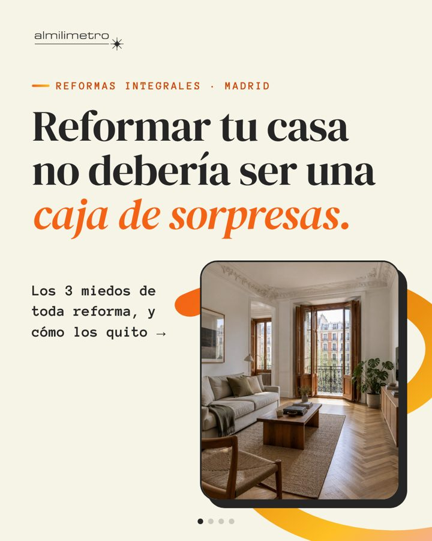
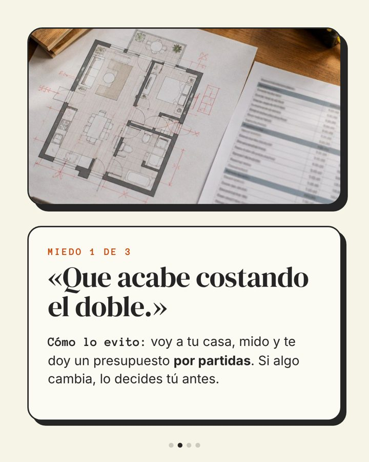
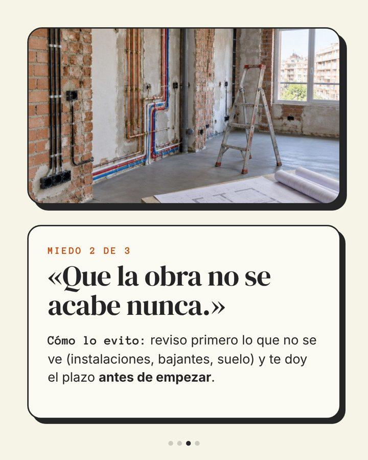
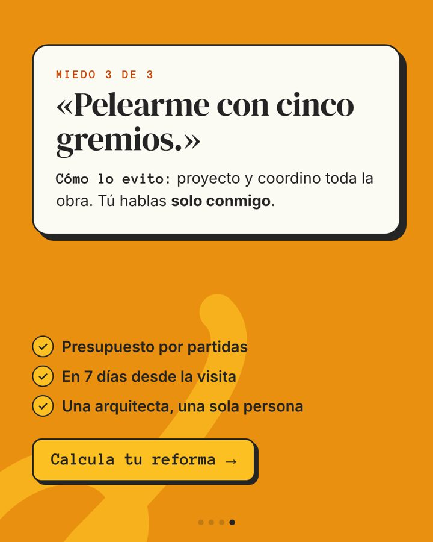
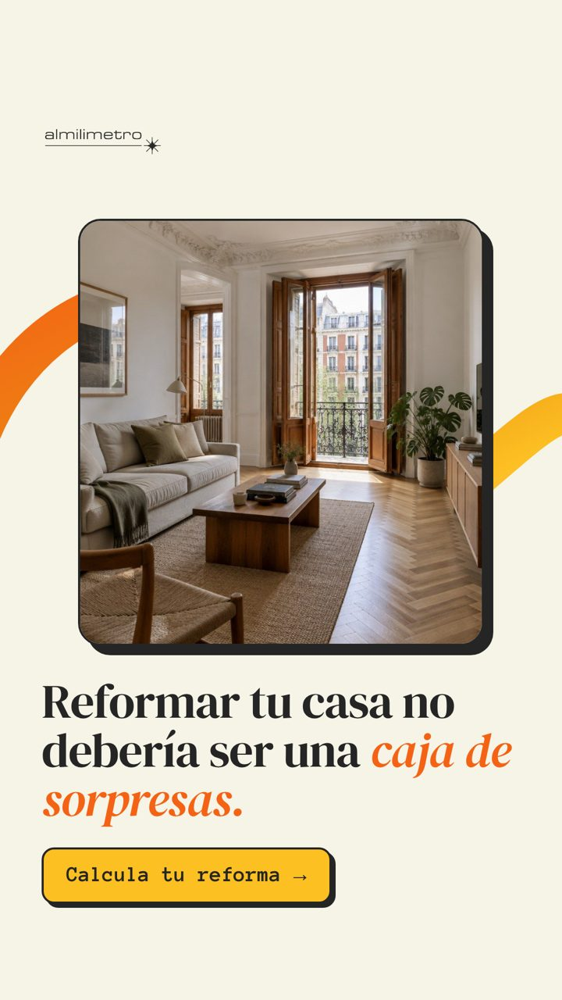
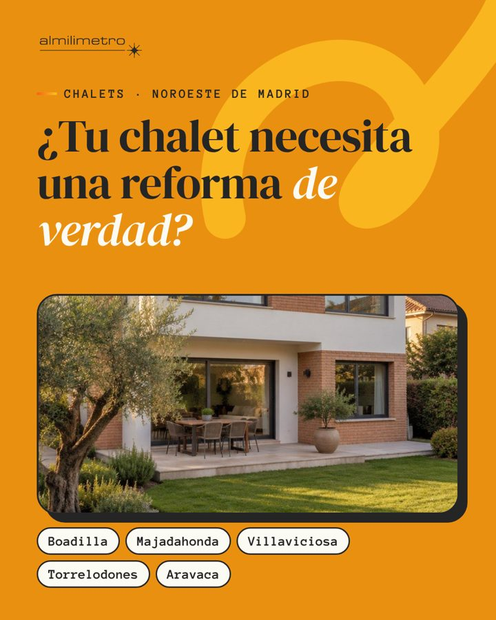
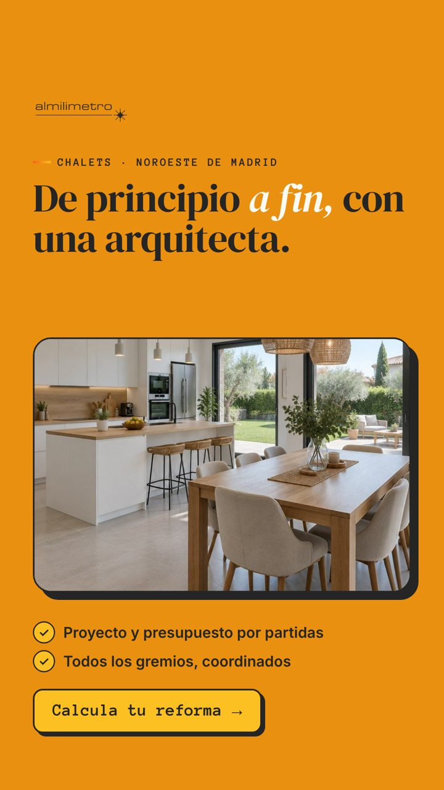
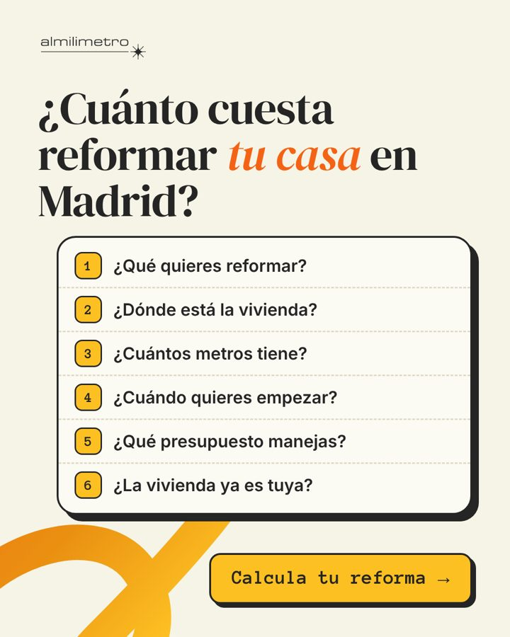
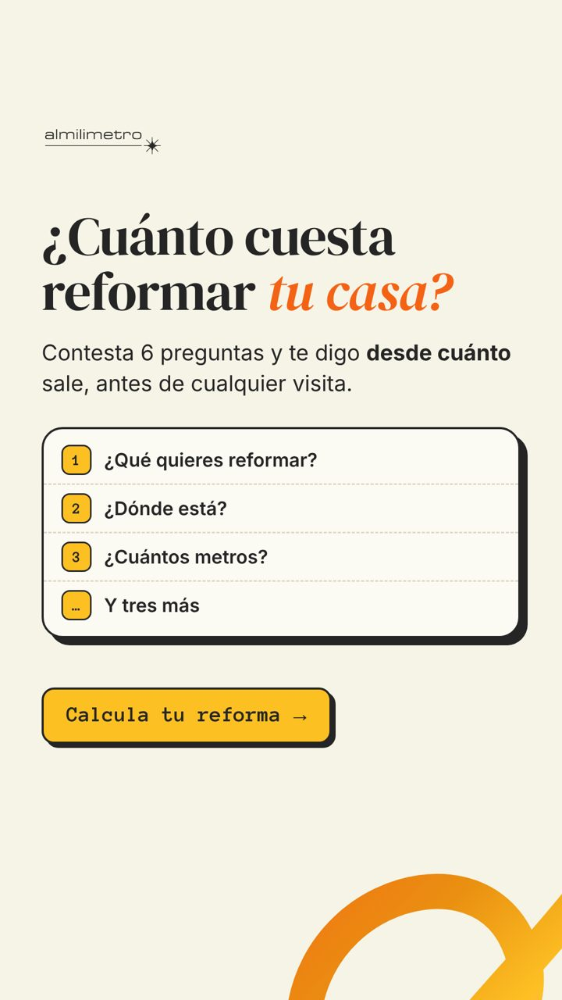

Tres anuncios con el estilo de tu web.
Los mismos colores, la cinta naranja y la letra de almilimetroreformas.com, sin vídeo y sin tu cara. Cada uno lleva a la misma página, con el formulario «Calcula tu reforma». Hablas tú, en primera persona, como en tu web.
| Mensaje | Duda que responde | Piezas | Público | Botón de Meta |
|---|---|---|---|---|
| A · Sin extras ocultos | «¿Y si se me dispara el precio o no acaba nunca?» | Carrusel de 4 · story | Todas tus zonas, 35-70 años | Solicitar presupuesto |
| B · Tu chalet, de principio a fin | «¿Quién me coordina una reforma tan grande?» | Imagen · story | Boadilla, Majadahonda, Villaviciosa, Torrelodones y Aravaca | Solicitar presupuesto |
| C · ¿Cuánto cuesta? | «¿Cuánto me va a costar?» | Imagen · story | Todas tus zonas y quien visitó la página sin terminar | Más información |
Sin extras ocultos





- Titular
- Tu reforma integral, sin extras ocultos
- Botón
- Solicitar presupuesto
Es la pregunta con la que abre tu web: el miedo a los imprevistos y a los sobrecostes. El carrusel nombra los tres miedos con las palabras del cliente y responde a cada uno con algo que tú ya haces.
Pendiente- Sin «plazo por escrito» ni «más de 20 años» hasta que lo confirmes. En su lugar va «presupuesto en 7 días», que es tu norma.
- Las fotos se cambian por las de tus obras cuando las tengas, sin tocar el diseño.
Tu chalet, de principio a fin


- Titular
- Reforma integral de chalets, de principio a fin
- Variante
- «¿Tienes un chalet en {municipio} que pide una reforma completa?», un conjunto de anuncios por municipio
- Botón
- Solicitar presupuesto
Es tu obra prioritaria y la de más importe. Nombrar el municipio hace que quien vive allí se pare, y la versión por municipio deja ver en dos semanas qué zona trae visitas.
Pendiente- Hasta dónde vas con los chalets (¿Las Rozas, Pozuelo?). Si amplías, se añade al texto y al público.
¿Cuánto cuesta reformar tu casa?


- Titular
- Calcula tu reforma en 2 minutos
- Botón
- Más información (Meta no tiene «Calcular»; la pieza y el formulario dicen «Calcula tu reforma»)
Tu cliente ya ha preguntado a Google cuánto cuesta. Le das un «desde» a cambio de las 6 preguntas, que son justo las que filtran. La imagen enseña el formulario tal cual, así nadie se sorprende al abrirlo.
Pendiente- Las cifras «desde» no salen en el anuncio, solo en la página, hasta que valides el Excel.